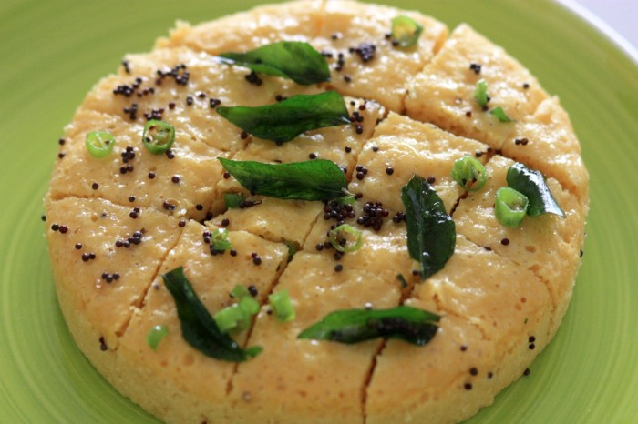

Dhokla Recipe

Description
Dhokla is a light, fluffy, and savory steamed cake originating from the western Indian state of Gujarat.
It's a popular vegetarian snack enjoyed throughout India and beyond, known for its unique fermented flavor and soft, spongy texture.
Ingredients
- 1 cup urad dal
- 1/2 cup water
- 1/4 cup yogurt
- 1/4 cup semolina(sooji)
- Oil for greasing
Steps
- Wash and soak the urad dal in water for at least 6 hours, or overnight.
- Add the semolina, curd, green chili paste, salt, and sugar to the batter and mix well.
- Cover the batter and let it ferment for 8-10 hours, or until it doubles in volume.
- Just before steaming, add the baking soda dissolved in 1/4 cup water to the batter and mix gently.
- Steam the dhokla for 15-20 minutes, or until a toothpick inserted into the center comes out clean.
- Cut the dhokla into squares and serve hot with chutney or a sprinkle of sev.